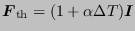

Next: Modified ten-node tetrahedral element
Up: Element Types
Previous: Four-node tetrahedral element (C3D4
Contents
The C3D10 element is a general purpose tetrahedral element (4 integration points). The shape functions can be found in [84]. The node numbering follows the convention of Figure 67.
Figure 67:
10-node tetrahedral element
|  |
The element behaves very well and is a good general purpose element,
although the C3D20R element yields still better results for the same
number of degrees of freedom. The C3D10 element is especially
attractive because of the existence of fully automatic tetrahedral
meshers.
guido dhondt
2018-12-15